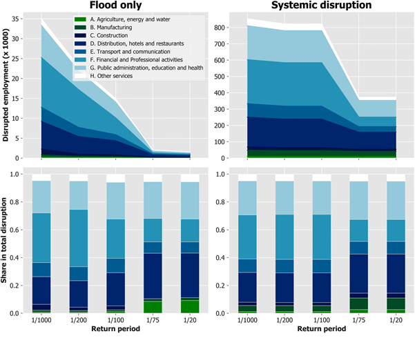

This mini-lecture covers how economic activities are dependent on reliable infrastructure services. A commonly applied method for calculating the macro-economic impacts of infrastructure service disruptions is introduced. Case studies are then explored which illustrate how the analysis can be applied to a range of infrastructure types and kinds of economic activity.
Many economic activities are dependent on reliable infrastructure services. When infrastructure disruptions impact businesses, they have cascading macro-economic impacts. This can occur in a variety of ways, three examples are outlined below:
Many factory operations require a reliable supply of water and electricity. If factory operations are disrupted due to power or water supply cuts, this may cause further ripple effects through supply chains (Koks et al. 2019)
As a key node of supply chains, when port infrastructure is disrupted, the flow of goods will also be disrupted, possibly across large scales (Verschuur, Koks, and Hall 2021)
A more nuanced example would be the potential impact of future droughts on cooling water shortages to thermo-electric power plants, and the potential consequences of that for increasing electricity prices in the future (Byers et al. 2020).
It is important to understand the full cost of infrastructure service disruptions to prioritise funding for adaptation. This section first introduces a commonly used approach for understanding economic disruptions through Input-Output modelling. This is followed by three case studies that explore the importance of infrastructure for economic activities and how disruptions may have broader, macro-economic consequences.
Input-Output (IO) tables describe the rate of transaction between different production sectors. IO impact assessments involve quantifying the economic impacts of changes in the production from one sector for other dependent sectors.
As discussed previously, when infrastructure disruptions occur, they may disrupt production or other economic activities. Thus, IO impact assessments can be, and are increasingly being, integrated with spatial infrastructure network models to quantify indirect economic losses associated with infrastructure failures.
Verschuur, Koks, and Hall (2021) used IO tables to perform a criticality analysis of port and maritime transport networks globally with respect to their interdependency with global supply-chains, concluding that several low-income countries and island states were often more dependent on maritime transport through one or two key ports than higher income countries.
They found more examples, such as the Congo, Malta, Mauritius and Tanzania, where 20.3-43.5% of economic activity was dependent on trade flows flowing through a single port. Their study also showed, on a global scale, that 9.3% of the total industry output depends upon trade flowing through the top 10 ports, with the port of Shanghai alone embedding 1.7% of global output.
Therefore, large macro-economic impacts, both on a national and global scale, could be expected when ports are affected by climatic extremes.
Koks et al. (2019) combined geospatial locations of electricity infrastructure assets in the south-east of England supplying to local industrial areas, with a multiregional supply-use IO model of the UK economy that traced the impacts of electricity flooding causing supply-side disruptions to businesses, which led to macro-economic losses across 37 subnational economic regions of the UK.
This study, involving the stress testing of every combination of failures of five substations exposed to more than 1-metre of flooding, demonstrated that for a 1 in 1,000-year flood event business disruptions at a local level were magnified by a factor of 23 when incorporating electricity failure in the loss assessment. The left panel of Figure 11.4.1 shows projected reduction in employment per sector due to extreme flooding in the southeast of England. The right figure shows systemic disruption which also accounts for the disruption to businesses and associated consequence for employment caused by flood-induced electricity supply disruption. The systemic disruption is significantly greater and, indeed, when looking at a national level, the results showed that daily direct output flow losses could increase up to a factor of 33 and total output flow losses up to a factor of 3, when including electricity failure in the loss assessment.

Figure 11.4.1: Projected reduction in employment due to extreme flooding at business asset locations (left) and at both business asset locations as well as the electricity assets that serve them (right), in absolute (top) and relative (bottom) terms (Koks et al. 2019)
The previously mentioned examples relate to the macro-economic impacts of infrastructure asset failures due to the dependence of various economic activities on services including transport, water and energy. However, climate hazards can also affect the resource or commodity being provided by infrastructure systems, going on to cause macro-economic ripple-effects through price variations. For example, a common form of electricity generation is via thermo-electric power plants, which relies on vast volumes of water for cooling plant equipment. Thus, cooling water shortages or increasing water temperatures may have a severe impact on the rate of electricity generation. A reduction in supply is likely to lead to increased electricity prices.
Byers et al. (2020) investigated the risks that cooling water shortages pose to thermo-electric power plants in the UK, considering present, near future and far future climate scenarios. They coupled this analysis to an economic model of electricity supply, demand and prices to find that the macro-economic impacts of future droughts, via increased electricity prices, range from GBP29–66 million per year.
This mini-lecture provided an overview of the interaction between infrastructure services and the economy, and various case studies that explore how the broader economic impacts of infrastructure failures can be quantified. You should now be able to recognise how various economic activities depend on infrastructure services and quantify the macro-economic impacts of infrastructure disruptions.